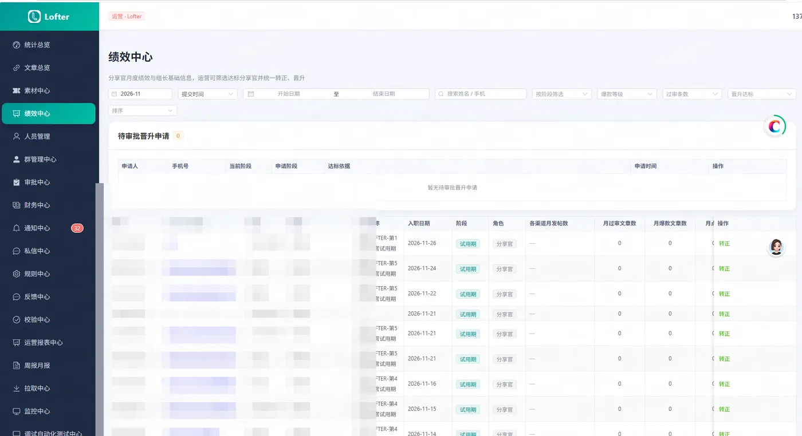
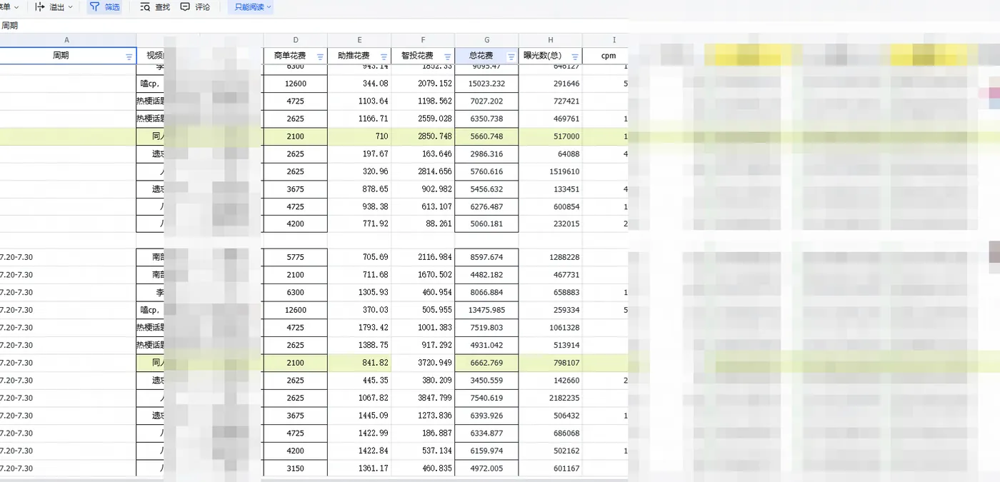

返回首页
KOC 平台 / 手机号、姓名、飞书昵称已脱敏
KOL 渠道数据 / 达人、任务 ID 已脱敏
AI IN WORKFLOW / 使用心得
AI 已经进入工作流。
目前 AI 已完全接入工作流：从 KOC 筛选结算、KOL 渠道回传，到社媒内容输出。
01 / KOC
协助搭建 KOC AI 平台
把筛选、输出、归因、审核、结算串成一条流程；原来靠人工表格反复对齐的环节，现在自动流转。
30%整体提效


02 / KOL
快手 / 抖音 / 小红书回传统计
协助搭建各渠道回传数据统计，把曝光、互动、花费和 CPM 统一到一张表；减少人工汇总与重复核对。
截图中的手机号、姓名、达人、任务 ID 等信息已做脱敏处理。